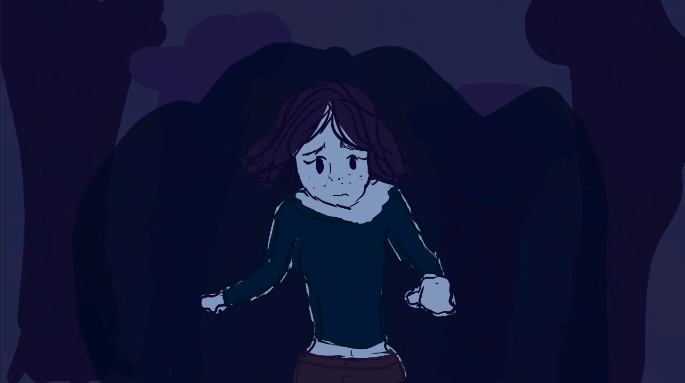
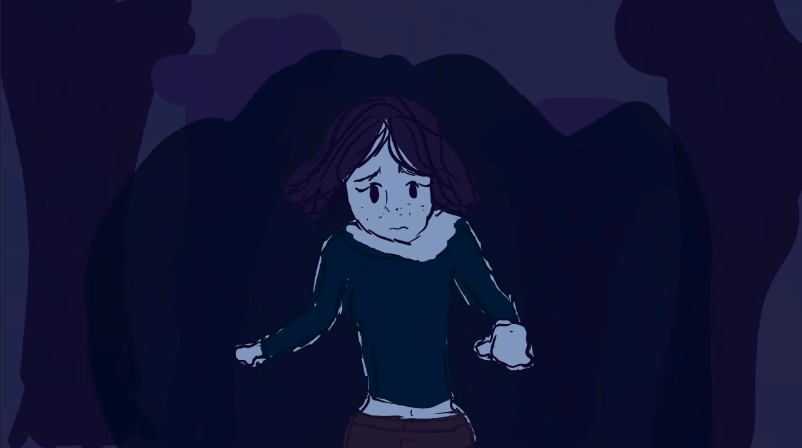

Welcome to Treat Racer — a silly, high-energy game where you play as Pop the cat and race against Pap the dog and Pip the hamster, each mounted on wacky vacuums. The first animal to reach the finish line wins a mountain of tasty pet treats—and, of course, ultimate bragging rights. The game leans fully into a goofy and lighthearted style, and I reflected that in my design work by keeping things simple.
Each pet racer was based on real animals I’ve known, which made the process more personal and fun. Pop was inspired by the lead coder’s beautifully colored cat, full of grace and sass. Pap, the wide-eyed, slightly clueless dog, was modeled after my cousin’s hilarious pug. And Pip, the chaotic little hamster, was inspired by my friend’s tiny mouse who never seemed to sit still. Designing these characters was not only creatively rewarding but also a way to bring a bit of real-world charm into our over-the-top racing world.


 
